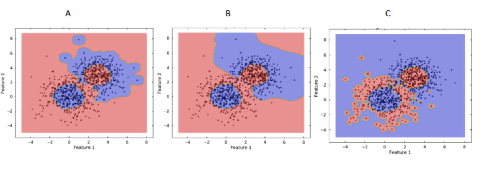
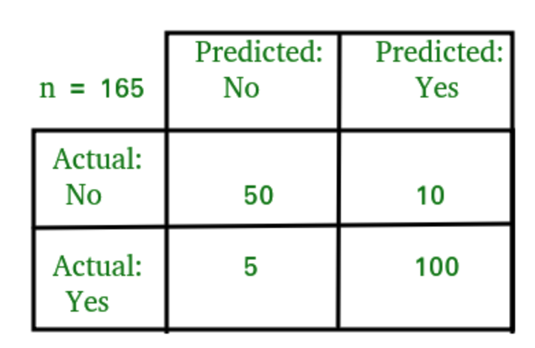

Proefexamen vragen Machine learning
Q: Bespreek twee manieren om overfitting tegen te gaan.
A: de mogelijkheden zijn :
- meer trainingsdata gebruiken bijv bij NN, model gaat meer gevraieerde data zien, gaat niet zo makkelijk de data vanbuiten kunnen leren
- model complexer maken hogere orde features toevoegen
- dropouts bij NN
- C bijstellen bij Logistic Regression/SVM
- bij decision trees overschakelen op RFT
- learning rate verlagen (0.8 ipv 0.9) bij Gradient Boosting bij ensemble learning waardoor de invloed van de volgende modellen kleiner wordt en je overfitting voorkomt.
- kleinere gamma kiezen bij SVM
Q: Bespreek het verschil tussen bagging en boosting
A: Bagging en boosting zijn beide ensemble methodes. Beide nemen slechts een random deel van de trainingset (met teruglegging) om een nieuw model te trainen. Aangezien de modellen bij bagging onafhankelijk van elkaar zijn kunnen de modellen in parallel getraind worden. Indien de modellen voor een bepaalde klasse slecht score gaat bagging hier niets aan veranderen.
Bij boosting echter wordt dit laatste wel opgelost door die data elementen die verkeerd gescoord werden een groter gewicht toe te kennen om geselecteerd te worden voor de bag van het volgende model. Hierop wordt er op die datapunten meer getraind. Het gevolg is dat de accuraatheid van boosting beter is dan bij bagging.
Mogelijk nadeel hierbij kan zijn dat er overfitting optreed omdat het ensemble elk datapunt probeert goed te krijgen en dus ook de ruis van die datapunten meeneemt in de modellen.
Aangezien de kans op selectie na elke training moet bijgesteld worden kunnen de modellen dus enkel sequentieel getraind worden bij boosting in tegenstelling tot bagging waar dit parallel kon gebeuren.
RFT vb van bagging
Adaboost, XGBoost, GradientBoost als boosting vb
Q: Bespreek het verschil tussen regressie en classificatie. Geef van elk een voorbeeld.
A: Bij regressie gaat het model een getal predicten (prijs van een huis) terwijl bij classificatie (hond of kat) het model gaat aangeven hoe waarschijnlijk het is dat de predictie een bepaald label/klasse is. Voor regressie zou je een SVM kunnen gebruiken en bij classificatie een RFT.
Q: Bespreek een manier om overfitting op te sporen.
A: bij SVM bereken je de accuracy van je model zowel op trainingset als testset en als die op testset veel lager is dan op de trainingset heb je overfitting.
Q: Bespreek het nut van het gebruik van dropout bij neurale netwerken.
A: Om te voorkomen dat een NN gaat overfitten kan je aangeven hoeveel procent dropout er is tijdens de training. Hiermee geef je aan hoeveel procent van de neuronen op non-actief moeten gezet worden tijdens de training. Hierdoor moeten de andere neuronen dit compenseren en gaan ze generieker ingesteld worden en voorkom je overfitting.
Q: Wat is er ‘naive’ aan naive Bayes?
A: Bij Naive Bayes hou je geen rekening met de correlatie tss de features/woorden.
Q: Welke bewering(en) zijn correct ivm het bag-of-words model bij natural language processing
1. Het bag-of-words model houdt rekening met de volgorde van de woorden
2. Het bag-of-words model houdt geen rekening met de volgorde van de woorden
3. De grootte van de bag-of words hangt af van de grootte van de vocabulair
4. De grootte van de bag-of words hangt niet af van de grootte van de vocabulair
A: 2 en 3
Q: Een support vector machine werd 3 keer getraind met een RBF kernel, telkens met verschillende gamma waarden. De C-waarde was telkens hetzelfde. Rangschik de onderstaande plots van kleine gamma waarde naar grote gamma waarde.

A: B < A < C
Q: Welke van onderstaande activatiefuncties produceren een output die gelegen is tussen -1 en +1:
- Sigmoid
- Tanh
- Relu
A: 2
Q: Een model voorspelt of een tumor al dan niet kwaadaardig is. Na testen van het model bekom je onderstaande confusion matrix.

Welke bewering(en) kloppen NIET met betrekking tot deze confusion matrix?
- De accuraatheid is hoger dan 90%
- De recall van klasse ‘No’ is hoger dan die van klasse ‘Yes’
- Het aantal false positives is groter dan het aantal false negatives
A: enkel 2
Q: Gezichtsherkenning is een toepassing van
- Regressie
- Classificatie
- Unsupervised learning
- Supervised learning
A: 2 en 4
Q: Veronderstel dat een neuraal netwerk een zeer hoge accuraatheid haalt op de training set maar een slechte op de test set. Welke stappen kan je ondernemen?
- Meer training data gebruiken
- Minder training data gebruiken
- Dropout toepassen
A: 1 en 3